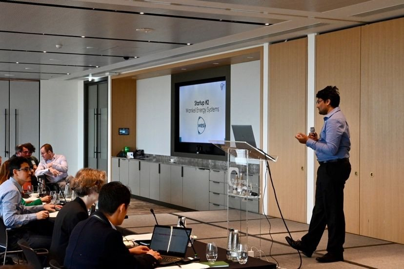

Ventures
From the Energy & Emissions Research Group (EnERG), IIT Madras

Pitching Wankel Energy Systems
Research leaves the lab through companies. Seshadri has co-founded four deep-tech startups, each commercialising a distinct strand of the group's research, supported by the IndusDC venture studio.
| Company | Founded | Focus | Recognition |
|---|---|---|---|
| Wankel Energy Systems | 2022 | Steam-to-power via patented dynamic admission control; ≈20 GW India opportunity (80 MT CO₂e/yr potential) | MIT Clean Energy Prize 2024 finalist (top 8 of 163; only Indian startup) |
| TrigenDC | 2023 | Industrial heating electrification — high-temperature / steam heat pumps (TRL 9; 50+ sites, 200+ units) | FLCTD/UNIDO award winner 2022 |
| EnergyEta | 2024 | Building-energy OS — IoT sensing + physics-informed machine learning | — |
| AranTree Consulting | 2024 | ESG and decarbonisation consulting | — |
Ecosystem
- IndusDC — deep-tech venture studio partnership with IIT Madras focused on decarbonisation startups.
- Nirmaan (Faculty-in-charge, 2017–2022) — IIT Madras pre-incubator; seeded 20+ startups including Tan90 and Modulus Housing, collectively valued at about ₹1,000 crore.
- School of Innovation and Entrepreneurship (Head, 2025–) — home of the MS in Entrepreneurship programme.